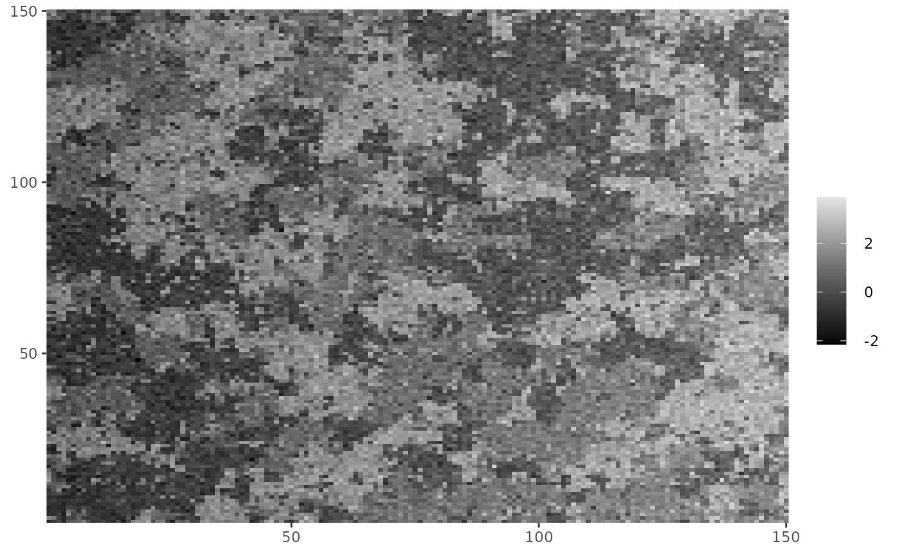
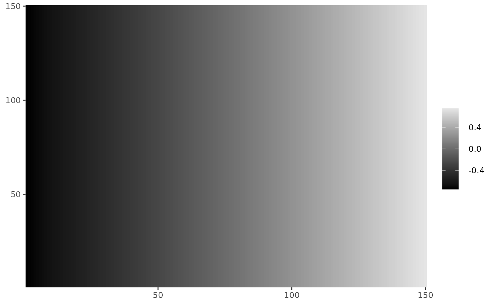

fit_ghm fits a Gaussian Mixture model with hidden components
driven by a Markov random field with known parameters. The inclusion of a
linear combination of basis functions as a fixed effect is also possible.
The algorithm is a modification of of (Zhang et al. 2001) , which is described in (Freguglia et al. 2020) .
fit_ghm(
Y,
mrfi,
theta,
fixed_fn = list(),
equal_vars = FALSE,
init_mus = NULL,
init_sigmas = NULL,
maxiter = 100,
max_dist = 10^-3,
icm_cycles = 6,
verbose = interactive(),
qr = NULL
)A matrix of observed (continuous) pixel values.
A mrfi object representing the
interaction structure.
A 3-dimensional array describing potentials. Slices represent
interacting positions, rows represent pixel values and columns represent
neighbor values. As an example: theta[1,3,2] has the potential for the
pair of values 0,2 observed in the second relative position of mrfi.
A list of functions fn(x,y) to be considered as a fixed
effect. See basis_functions.
logical indicating if the mixture model has the same
variances in all mixture components.
Optional. A numeric with length (C+1) with the initial mean
estimate for each component.
Otional. A numeric with length (C+1) with initial sample
deviation estimate for each component.
The maximum number of iterations allowed. Defaults to 100.
Defines a stopping condition. The algorithm stops if the
maximum absolute difference between parameters of two consecutive iterations
is less than max_dist.
Number of steps used in the Iterated Conditional Modes algorithm executed in each interaction. Defaults to 6.
logical indicating wheter to print the progress or not.
The QR decomposition of the design matrix. Used internally.
A hmrfout containing:
par: A data.frame with \(\mu\) and \(\sigma\) estimates for each
component.
fixed: A matrix with the estimated fixed effect in each pixel.
Z_pred: A matrix with the predicted component (highest probability) in
each pixel.
predicted: A matrix with the fixed effect + the \(\mu\) value for
the predicted component in each pixel.
iterations: Number of EM iterations done.
If either init_mus or init_sigmas is NULL an EM algorithm
considering an independent uniform distriburion for the hidden component is
fitted first and its estimated means and sample deviations are used as
initial values. This is necessary because the algorithm may not converge if
the initial parameter configuration is too far from the maximum likelihood
estimators.
max_dist defines a stopping condition. The algorithm will stop if the
maximum absolute difference between (\(\mu\) and \(\sigma\)) parameters
in consecutive iterations is less than max_dist.
Freguglia V, Garcia NL, Bicas JL (2020).
“Hidden Markov random field models applied to color homogeneity evaluation in dyed textile images.”
Environmetrics, 31(4), e2613.
Zhang Y, Brady M, Smith S (2001).
“Segmentation of brain MR images through a hidden Markov random field model and the expectation-maximization algorithm.”
IEEE transactions on medical imaging, 20(1), 45--57.
A paper with detailed description of the package can be found at doi: 10.18637/jss.v101.i08 .
# Sample a Gaussian mixture with components given by Z_potts
# mean values are 0, 1 and 2 and a linear effect on the x-axis.
# \donttest{
set.seed(2)
Y <- Z_potts + rnorm(length(Z_potts), sd = 0.4) +
(row(Z_potts) - mean(row(Z_potts)))*0.01
# Check what the data looks like
cplot(Y)

fixed <- polynomial_2d(c(1,0), dim(Y))
fit <- fit_ghm(Y, mrfi = mrfi(1), theta = theta_potts, fixed_fn = fixed)
#>
Fitting independent mixture to obtain initial parameters.
#>
EM iteration: 1
EM iteration: 2
EM iteration: 3
EM iteration: 4
EM iteration: 5
EM iteration: 6
Finished with 6 iterations.
fit$par
#> mu sigma
#> 0 -0.001568028 0.4012135
#> 1 0.999990536 0.3966913
#> 2 2.002972466 0.4026593
cplot(fit$fixed)

# }